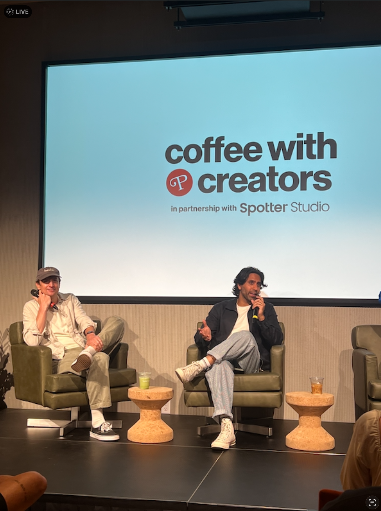
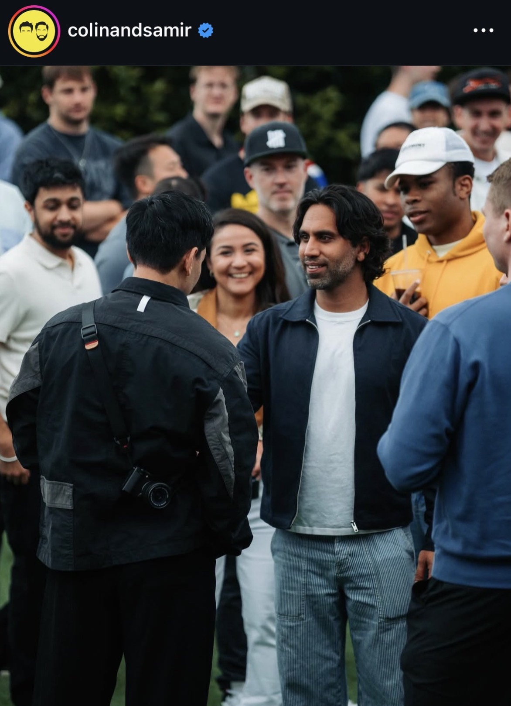
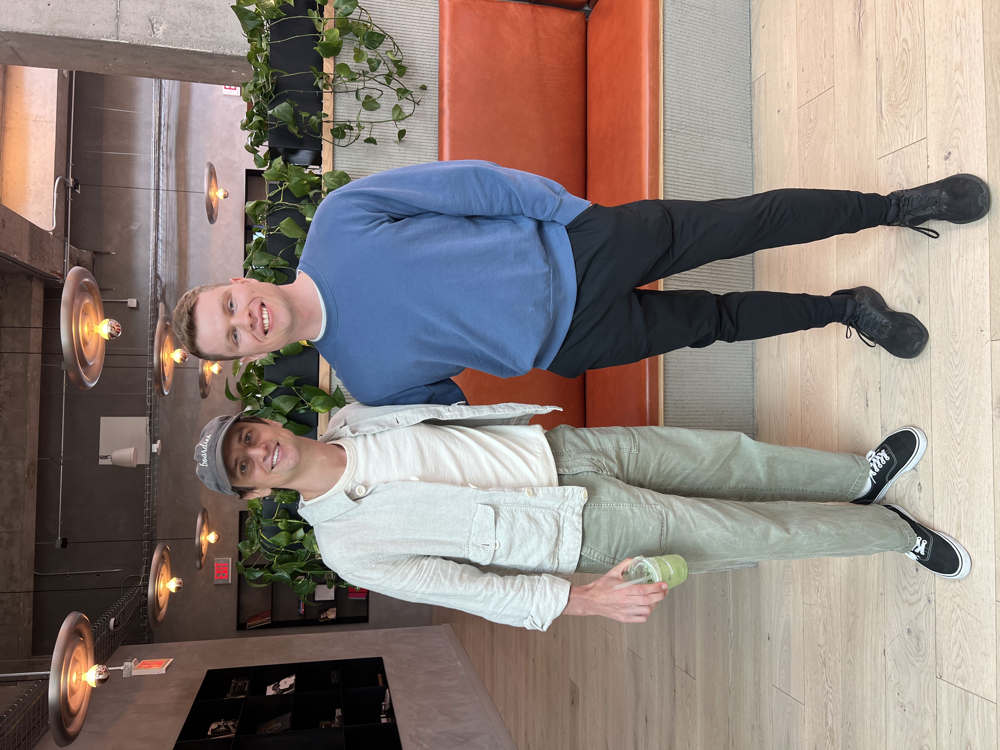
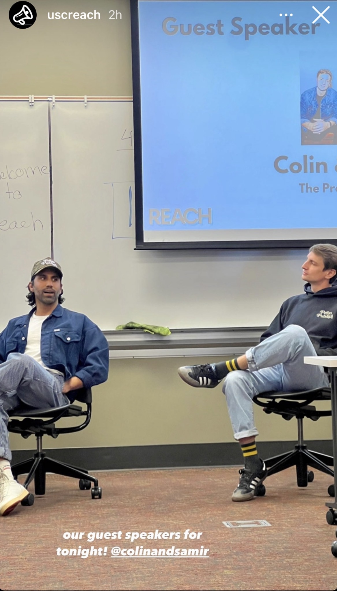

Colin & Samir on stage at The Lighthouse during the formal Q&A portion

Samir Chaudry (middle) along with other attendees and me (right, blue sweater)

Colin Rosenblum (of Colin & Samir) and I posing for a picture
On June 7th, 2025, Colin and Samir — hosts of the most popular creator economy podcast, The Colin and Samir Show — hosted one of an event called "Coffee with Creators" at The Lighthouse in Venice, California.
For those not familiar with Colin and Samir, they're a pair of YouTubers/Podcasters who blew up around ~2021-2022 after over a decade of failing on YouTube, and if I had to boil their show down to one thing, I'd say that they teach influencers and creators how to succeed.
On their podcast, they've interviewed many of the biggest creators and creator economy players in the world, including Mr. Beast (almost a dozen times), Mark Rober, Mark Zuckerberg, Emma Chamberlain, Michelle Khare, Casey Neistat, Marques Brownlee, and many more.
The venue itself - the Lighthouse - opened earlier in 2025 and is a membership-based creative campus built inside the former 1939 Venice Post Office, designed specifically for creators. It has production studios, podcast bays, edit suites, event spaces, and even general-purpose work/collaboratino spaces all under one roof.
It's the kind of place that didn't exist ten years ago, and the fact that it does now says a lot about where the creator economy has gone. It is a legitimized, full-fledged industry at this point, and at the same time, things are trending significantly towards being in-person.
The Lighthouse in Venice instantly become an iconic venue and it's something that I've personally enjoyed visiting, both because of the lighthouse itself, and because of the overall area it's in.
How This Blog Post Is Structured
This specific blog post will be slightly different than previous blogs in that not only am I going to both summarize my biggest takeaways from the event, but I'm also going to do a deep dive in other topics which I've touched on in other blogs as well, with most being frameworks for becoming a successful creator.
The latter will involve me going down a ton of rabbit-roles, including doing a deep dive on online sources to help me answer burning questions which both I and many aspiring creators have, particularly centered around everything that i've talked about in previous articles, including product/media-market fit, overcoming the cold start problem in content creation, effectively coming up with a minimum viable product, a good thesis, how to fail effectively and quickly, and overall what to focus on, and most importantly, how to execute on those things.
Other things include more macro strategies and tactics such as niche selection, audience definition, number of channels, type of cameras/equipment/lighting to use, which formats to try, coming up with an effective mission statement/thesis/business plan as a creator, and so much more.
I've learned a ton of good frameworks so far, many or all of which I've learned about and documented in the previous articles from this blog, but here, I'm going to dive deeper into the more tactical "how" and the "why" behind many of those - not just the "what," which I've done in previous articles.
The actual summary of the Colin and Samir Event will be short since I didn't take a ton of notes duing the event, but I do think that the takeaways I highlight here could be valuable for anyone going into content or business and not knowing how to start.
Colin & Samir's November 2023 Visit To USC
Before going over the takeaways of this talk, I'd actually like to briefly highlight that Colin and Samir actually came to my school (the University of Southern California) and gave a talk to my club on November 1st, 2023, and I actually reached out the semester before asking if they wanted to be guest speakers, but I unfortunately missed the November 2023 talk at USC since I had thoracic surgery just 2 days before and unfortunately couldn't attend.

Colin & Samir Speaking at the University of Southern California in a Leavey Library Lower-Level Classroom, November 1st, 2023
Think of Your Channel Like A TV Network
During the Q&A Session that Colin & Samir held inside, one of the audience members asked something along the lines of what Colin and Samir thought about posting multiple different types of content under one channel - be it different formats, different topics entirely, or both.
They asked what their experience has been and what their thoughts are about sticking to one thing on a specific channel versus posting a bunch of different topics, and whether they ever tried the latter and felt like they might get penalized for doing so and feel like they're siloed into making one type of content as a result.
Colin responsed by asking everyone else in the room who felt a similar way - that is, anyone who was also grappling with the same question - to raise their hands.
A ton of people actually ended up raising their hands, highlighting how widespread of a problem this topic is (and the general confusion/ambiguity about it).
Colin said that he recommends that creators seperate different formats/topics onto different channels and keep things siloed (seperately) - although he also acknowledged that for their own channel, they don't always follow that advice.
Samir gave a realy good analogy to solidify this concept.
He mentioned that you should think about each individual YouTube channel like TV shows, NOT like a TV network.
YouTube sort of used to operate like a network where you could run multiple formats/topics under one channel and it worked.
But today, a YouTube channel functions much more like an individual show, where that repeatable audience experience - exactly as Steven He would put it in his Novembe 2025 USC talk - is what makes the audience continue to come back.
It's sort of like having a TV show - they gave Severance Season 2 as an example - where you show up expecting one thing and then get a completely different thing.
I haven't watched Severance, but Samir mentioned that he felt sort of annoyed by the snow world episode since it was completely off-format from the rest of the season.
Similarly, if someone tunes in for a 1-hour podvast every week but they suddenly get a cooking video instead, that'll create a lot of confusion and dissatisfaction with your audience as well.
This all ties exactly into what Steven He said in his November 2025 talk at USC - which is to have seperate channels and create a repeatable audience experience so the audience comes back for more.
Just to review what Steven would later say in his talk that's relevant here - Steven menitoned that the YouTube algorithm isn't currently smart enough to serve videos from different niches into different audiences and that you must create seperate channels for those different topics (unless if you can do 10% pivots).
Once you do fine a content-market fit, you need to think of yourself like a traditional business which serves that thing every day/week over and over and over again.
He gave the example that if you're Apple, you're REALLY GOOD at making iPhones, and when you release a new iPhone, people line up outside of your door for that.
But if instead of selling those people iPhones, you sell them avocado toast, they're going to be extremely confused and be much likely to come back - EVEN if it's the best avocado toast in the world.
And to give a similar example which Steven or Colin/Samir did not give, if you're a bagel shop and your customers come back every day expecting that, but you instead stop selling bagels and start selling mattresses or tax advice one day, your customers will be extremely confused and they won't come back.
In the last two examples, you're doing the same thing over and over and over again, but it's because your business is really good at it, and that's the way you make money.
Apple could try selling dozens or hundreds of products, and they did at one point and almost went bankrupt before Steve Jobs came back and simplified to only a few primary product lines.
A bagel shop could try selling smoothies, avocado toast, sushi, coffee, matcha, and a ton of other food and beverage items, but it'll probably go out of business compared to if it had a very clear focus (and value prop).
Again there's always exceptions, but for creators breaking through the noise, THIS is the best way to do so.
Colin said that his and Samir's channel had its best growth period in ~2020-2022 when they had committed entirely to a one format - interview only, with all thumbnails looking exactly the same, and so on. Now that they're bigger, they do mix in several types of videos into their channel, but are ok with that, even if it's not the optimal strategy, based on where their channel is at.
Samir gave the example of Chris Williamson, who's a great real-world case study in this. On his channel, he posts long-form podcasts, podcast clips, and vlogs all on one channel. They acknowledged that Chris willingly sacrifices performance by doing this, with some of his vlogs only getting 30,000 views for example, and likely dragging down his longform podcast views as well.
However, Chris is fine with it since those 30,000 people are his most loyal, committed audience.
Sometimes, you can bend the rules a bit, but if pure growth, revenue, etc. is the goal, making the same thing, the same show (keeping "shows" on seperate channels and havign repeatable audience experiences for each of those) is usually the best way to go 99% of the time.
There was another larger creator in the audience - Steven Lim - who Colin and Samir asked to chime in, and Steven mentioned that his direct recommendation is NOT to build a network where you have everything under a single channel.
He tried it - food content, ghost hunting content, history content, all on one channel, and he saw that prople clearly got confused.
He agreed that consistency in topic, style, and format for each channel is more beneficial.
Steven Lim mentioned that the main exception is if you use your own name for the channel, you might have a little more flexibility.
For example, if you're a multihyphenate person, e.g. if you're both a musician and an artist or actor/actress, then that kind of variety might work under a personal name brand.
He added though that even then, it still can get harder as the channel gets bigger.
One last example that Samir gave which can help illustrate this is the example of Nick DiGiovanni and how he seperates his channels which is super fascinating.
Nick's primary two channels (he might have more, but these were the two mentioned here) are both about cooking.
Despite the fact that they're both about cooking, though, he keeps his first and second channels seperate.
Why?
It's because his main channel is food entertainment whereas his second channel, "Nick's Kitchen," is food education.
Those two channels serve different viewers with different reasons to watch, so a second channel made sense.
In the former, the audience is just looking to be entertained, whereas the latter is actually looking up videos and tutorials for getting better at something.
It's like the difference between one of those restaurants where they make the food in front of you and make a fun show out of it - doing things which you'll never be able to do yourself (e.g. the fire, flipping spatulas, and other things) but which you appreciate and are very much impressed/entertained by - and, in the latter case, learning how to do basic cooking yourself.
Stop and think for a second: what does each viewer want to get out of his main and second channels?
A main channel viewer wants to be wowed/impressed, whereas a Nick's Kitchen viewer wants to be taught.
One wants to be entertained, one wants to learn.
Long story short, if the value prop is similar, keep content on the same channel.
But if it's different, even if the overall topic is the same but the viewer and what they want to get out the video is fundamentally different, then post the content on seperate channels like Nick did.
Said differently one more time, if the two audiences and what they're getting out of the video (or want out of it) are fundamentally different enough that a subscriber of one type of content would be confused or annoyed when the other format/topic comes up, then that's when you split off into a new channel.
If you're breaking the repeated audience experience, you're breaking the implicit promise that you're delivering a certain type of experience and outcome every week.
Another creator which I'd like to highlight with respect to this framework - which Colin and Samir didn't highlight during the talk - is Justice Shepard. I randomly met him when we sat next to each other at VidCon 2022, and I've seen his content journey flourish ever since.
We're both the same high school year and age and both majored in engineering - me earning my M.S. in Astronautical Engineering from the University of Southern California later in 2023, after which I then went on to do a PhD for 2-1/2 years before taking a leave of absence.
Justice, on the other hand, went to UC Santa Barbara, and finished his Bachelors degree in Electrical Engineering in 2022. His last internship before he graduated was at Lockheed Martin in 2021, and coincidentally, I had a very similar internship that summer as well.
He already had significant momentum from his "Justice The Tutor (@justicethetutor)" account where he first started making math / SAT prep videos in the summer of 2020. He got millions or tens of millions of views per video, and was even signed by an agency only a few months later.
With that page, he had enough momentum to go full time in content in 2022 when he graduated from UCSB and he actually had JUST moved down to LA only a few weeks before I met him at VidCon 2022 and he didn't know anyone there yet!
Long story short, he ended up living the dream as an influencer, but for now I'm going to highlight how he actually pivoted from his @justicethetutor account when he saw a much more lucrative opportunity in 2023.
In 2022 and 2023, he started posting more broad educaitonal content on his @justicethetutor account - he wasn't just posting math content anymore, but was posting college interviews, general study tips/hacks, and so on.
The videos were great, but they weren't getting the same millions of views per video that his math videos were in 2020.
In 2023, however, I noticed that he'd started a new, second instagram account called "Justice Buys (@justicebuys)" which is essentially a super cool "Amazon Finds" page where he reviews and makes highly engaging videos on unique, practical, and sometimes even quirky products from Amazon, then he links to them in his bio, where he makes a commision off of them.
I noticed that he accrued over 83,000 followers within weeks of launching the account and he's since accumulated over 6 million followers from his Justice Buys pages (TikTok, Instagram, YouTube, etc. alone!).
Had he not created a seperate channel, but instead posted all of this on his previous @justicethetutor channel, he likely wouldn't have seen any of this explosive growth at all and the algorithm would've most likely been extremely confused, causing him to probably never or seldom go viral.
So long story short, Justice Shepard's @justicebuys account (seperate from his initial 2.1M Follower @justicethetutor account that he split off from) is a GREAT case study to illustrate Colin & Samir's point about treating different niches/audiences as different TV Channels (and thus why you should make different accounts for them) - Justice was recently interviewed on the podcast of the CEO of Superordinary - the same company that acquired FanFix - and it's totally worth a listen:
Justice was an excellent case study, but to give another more abstract, Steven-He-like example to drive the point home and give you a feel for what posting content for the wrong audience would look like (e.g. if you post multiple niches on one account and confuse the existing audience), consider the following analogy.
If you walked into starbucks and walked into a coffee-making class on random days, you'd be very mad that you're not getting your caffeine fix those mornings. On the other hand, if you determined on your own that you're tired of starbucks and wanted to show up to a matcha-making or coffee-making class somewhere, then you'd be much happier when you arrived at such a class since it would've been with intention.
With AI, Everyone's a Creative Director Now
Colin and Samir addressed the role of AI in content creation, after an investor in the audience asked a queston about what AI can do now that it couldn't 6 months ago.
They referenced a veteran 81-year old ad executive called John Hegarty who told that that AI tools have made the craft of execution so east that everyone is now effectively a creative director.
Importantly - the differentiator is no longer production ability, it's taste. Knowing what's good (and what's not).
Samir gave a specific before-and-after example to illustrate how much has changed.
He said that two years ago, the way they'd come up with a title for a YouTube video was to sit in their conference room in their old office and everyone would throw out ideas. He described it as being like dial-up internet — slow, laborious, bizarre.
Now, whether it's Spotter Studio or any other tool, you put in a concept and get hundreds of variations of that idea within minutes. The volume of what you can see and work with has exploded.
But his point was that what matters in that environment is still taste — can you look at all those options and pull the right word, connect it with the right other word, and know that's the good idea.
Colin and Samir said they think we're entering a relatively self-reliant era of creativity as a result of this.
The barriers to production have collapsed, which sounds democratizing, but what it actually means is that the person who wins is the one with the clearest perspective and the sharpest taste — not necessarily the one with the biggest production budget or team.
I would be a little careful with the last point, and double down (on a point I make later in this blog post about the barrier to success being high) that it's still going to be very hard to catch up with big youtubers and creators with a lot of these tools just since they are literally full blown production companies at this point, making it nearly impossible to compete.
Those larger creators will have access to the exact same tools you do - and while it will make things easier for all creators, the larger ones will still have an advantage.
But between creators at the same level? I 100% agree with Colin & Samir's point about taste bring the differentiator.
To give another example of how AI is changing content fast, they gave a title/thumbnail brainstorming example.
Samir gave a specific before-and-after example to illustrate how much has changed just recently.
He said that two years ago, the way they'd come up with a title for a YouTube video was to sit in their conference room in their old office and everyone would throw out ideas.
He described it as being like dial-up internet — slow, laborious, bizarre.
Now, whether it's Spotter Studio or any other tool, you put in a concept and get hundreds of variations of that idea within minutes.
The volume of what you can see and work with has exploded.
But his point was that what matters in that environment is still taste — can you look at all those options and pull the right word, connect it with the right other word, and know that's the good idea.
Colin gave another example of a project he was actually working on.
He was making a video, wanted some B-roll of a creator in it, to help contextualize things.
Colin ended up using Google VEO to put specific clips in his video, and he showed it to Samir, who couldn't tell which parts of the video were AI or not.
It saved him hours/days of tedius work, and resulted in a much better video in a fraction of the time.
The overall point they were making is that the tools are accelerating fast enough that every three months, it'll be even more accessible than it was before.
From a production standpoint, the playing field is being leveled, and the differentiator won't be AI (it'll just be standard), but instead will be taste and your own creativity.
Burnout, Taking Time Off If You Lose Your Creative Way
Someone asked Colin and Samir for advice for people who've lost their way creatively after a period of burnout or unemployment. They felt like they'd become very "jaded" from the industry and lack of success as well.
Colin mentioned that there was a point where he actually moved back home (to the east coast I think) in 2019, although in hi case he felt like he didn't fully stop even though they had parted ways and weren't making any content together anymore. He was still on the phone pitching ideas with Samir much of the time he was there.
Samir also framed it and mentioend that you should look at content in terms of seasons. You don't have to be don't content all the time, but can instead understand that you'll have seasons of your life (months, years) where you might be doing less content, and other seasons where you'll be doing it consistently. With the former, a lot of those seasons were shaped largely by persnal stuff that was going on or stuff happening at home or in their lives in general - not just the content itself.
He said that it's ok to recognize that you're in such a season and that it doesn't have to feel like you're abandoning everything.
Just a personal note to push back on this -- I think all of this from Colin and Samir is very good.
The only counterpoint I'd have about this is that oftentimes, content creation is something that should be looked at like being a professional athlete.
You'll usually only have a short window where you're making A LOT of money, but it won't last forever.
Along the way, you should take advantage of that for sure but always be planning for the next thing.
Zack Honarvar in his talk said as much - most creators have a lifespan of ~26 months.
Jacob Pace mentioned that he generally doesn't like media as a business model.
Zack himself is an expert at building businesses around content creation, and he's a huge proponent that creators build sustainable businesses around their content.
Back to what Samir was saying, I agree that if stuff truly gets in the way, DO NOT sweat it.
They came back from their hiatus and eventually did make it.
But at the same time, one shouldn't just take 5 years off of content creation and expect the career to be waiting there when they finish.
This can be very nuanced - like if you became a billionaire or something, or had some other major life accomplishment of that magnitude in the meantime, it would make sense that more people would listen to.
But to most people, the professional athlete analogy holds. And if you skip too much of that window of opportunity, you won't be able to open it again.
And furthermore, even though AI is bringing down the barrier to entry and democratizing content creation, the top creators are all also becoming full-blown production companies.
Even Steven He mentined that thats what's happening with his company, same for Alan Chikin Chow, and obviously Mr Beast is another example.
YouTube, Instagram, TikTok, etc. aren't just people in their bedrooms anymore.
The barrier to entry is getting lower over time, but the barrier to success is getting ever higher as time goes on.
Scripted Content Is The Future of YouTube
When asked about predictions on YouTube's future, along with trends and opportunities, Colin and Samir speicifally predicted that scripted narratives will likely play a huge role in YouTube's future.
Right now, it represents the single biggest format in legacy media, but represents less then 1% of YouTube, since nobody's figured out how to both make it cheap enough and formatted correctly for the platform.
Colin and Samir said that what's happening with scripted content on YouTube right now actually has a very strong historical parallel to early soap operas in the 1950s and 1960s.
It's similar in the sense that scripted content is where soap operas were in terms of creators being in the early, raw, cheap, "figuring it out" phase - which is the way that scripted content on any new medium evolves before it matures.
Just like early soap operas, current scripted narrative formats on youtube (especially shorts) are much lower budget, shot on simpler sets, and have more basic production value along with melodramatic acting compared to traditional big-budget television.
Like soap operas in the 50s and 60s, YouTube scripted content is currently in its own cheap, figure-it-out-as-you-go very early phase, but the production value, economic value, and more will evolve from here.
For now, creators foraying into scripted content are churning out this "simpler" version at a high/regular rate, but the concepts will evolve and mature much more over time as things progress.
Interestingly enough, the President and COO of Ridley Scott's Production Company (Justin Alvarado Brown, I believe) was present at the Q&A and had some fascinating thoughts on scripted content on YouTube.
He mentioned that he was introduced to a series called "Hazbin Hotel," which is an animated musical comedy series that completely started on YouTube (now streaming on prime video!), by a good friend at a party who was watching it on her phone.
Justin said that he wanted to meet the creator right away, but that Scott's production company unfortunately wasn't setup to do anything with it at the time, so the creator ended up making a deal with the company A24, which worked out incredibly well.
He came to the event because he wanted to figure out how Ridley Scott's company should show up on YouTube, because they haven't yet (despite the missed opportunity with Hazbin Hotel), and that they're actually looking for (the right) creators to partner with to create scripted content on YouTube right now!
He said that he's confident that by a year from now (June 2025), there will be entirely new conversations happening around scripted programming on YouTube.
His broader view was that the way scripted content will realistically work is that an A24 or a production company will put money up fromt to deficit finance scripted YouTube projects, treat it like a portfolio, hope that some build enough audience to become a franchise, and eventually develop an economic model around those.
While not discussed in this Colin and Samir talk - I could see parallels between this and Mr. Beast's "Beast Games" shows on Amazon Prime Video as well. He was a creator that had a strong following and a strong "show"/format, and he was approached by and funded by a major production studio (Amazon MGM studios) with a ton of success.
Mark Rober followed a similar path with moving his show over to Netflix after having a wildly successful YouTube channel, so there's definitely a shift in this direction.
Wrapping up the overall discussion on scripted narrative -- creators such as Alan Chikin Chow, Steven He, and Dhar Mann are great examples of scripted narrative on YouTube. (Hazbin Hotel and Amazing Digital Circus are both examples of animates scripted narrative series with recurring characters, episode arcs, and ongoing storylines; similar to cartoons you'd find on netflix, except they started on YouTube)
Colin and Samir predict that more and more channels will follow the trend of using scripted narrative in their videos in the future, especially as they get better at doing so within the YouTube medium.
One last thing to point out with regards to this is that Alan Chikin Chow and Steven He were already heading in this direction, even Alan as early as 2023 when he gave his talk to my USC student group.
Alan Mentioned that his goal with his company was to have "a multifaceted media company in film, digital, and television," and Steven He in 2025 pretty much already has that. Both have full blown production teams, sound stages, production studios, and systems, and I have no doubt that if they're not on traditional media already (e.g. streaming, TV, etc.), then they likely will be very soon.
It's pretty cool looking back that Alan in 2023 was already super far ahead of the curve and riding this trend before it even started gaining significant mainstream steam in late 2025/2026.
YouTube vs. Instagram — Know What Each Platform Actually Is
Someone in the audience asked about MetaVerified and whether paid promotion on Instagram and Facebook was worth it as part of a launch strategy for a new channel.
Colin was upfront that he doesn't know enough about MetaVerified specifically to give a useful answer — their entire career has been on YouTube, so Meta properties are largely outside their wheelhouse.
But he did share something more broadly useful about how to think about the two platforms differently.
He said Instagram feels to him like the world's town square. A YouTube video that does a million views — nobody around him mentions it. An Instagram post with a fraction of that reach — his parents see it, friends bring it up, people mention it in person. The audiences barely overlap.
The more important point though was this: YouTube is a genuinely creator-first platform, and the evidence is the revenue sharing model. YouTube built its entire economic structure around sharing ad revenue with creators. Instagram didn't — and the reason is telling. Colin referenced their own podcast episode with Adam Mosseri, the head of Instagram, who said outright that Meta doesn't necessarily believe in revenue sharing with creators because they don't know if people open Instagram for creators or for their friends. And their assumption — which Colin called fair — is that if every creator left Instagram tomorrow, everyone would still open it anyway.
The takeaway: YouTube is much more creator-friendly as a result since they NEED creators in order to function - Instagram, not as much, so the incentives (for the platfom to help you) aren't there as much, but both can still work very well.
While this part of the discussion was a lot murkier to be honest - the main takeaway is clear: always find out the platforms' underlying intentions and incentives, and then you can optimize your strategu from there.
I also might disagree with Colin and Samir a bit in this point in the sense that Steven He mentioned 5-1/2 months later, in his November 2025 talk at USC, that he thinks that Instagram is the BEST place to grow on short-form right now.
He thinks it's the best place both to grow and to get millions of views for short-form since it's become one of their biggest revenue drives.
Steven He said that YouTube used to be the king of this, but that he's seen a lot of ad spend shift toward short-form on Instagram specifically.
Content/Media-Market Fit
While researching for this article, i came across this Colin & Samir video, where the guy at 33:32 in the video talks about (content/)media-market fit, which is similar to the product-market fit that Harry Gesteter described to me as I summarized in the FanFix blog article.
I went off on this tangent since I've been trying to wrestle with the question of "what is product-market fit" in a social media context, and how do you find it as soon as possible without just relying on luck or random virality?
The creator in the video clip, who's name is Jack Conte, mentions that at the beginning, the best strategy to find medit-matket fit is speed of iteration and to "try a bunch of different things," see what you like, what resonates with the audience, then double down on it.
This is very similar to the process that Steven He described in his later November 2025 talk, which is to "try a bunch of different things, have most of them fail, then have something work and double down on repeatedly serving that thing."
Secondly, Conte said that beyond finding this fit, he thinks that it's IMPERATIVE that you move beyond shorts.
Technically you don't have to -- but now, as it was years ago, there are dangers if you don't.
He mentions that he thinks that this should take the form of some type of longer form content.
In my opinion, after seeing a lot of people successfully move beyond shorts as their primary revenue stream, I think that it could also include starting a business or something else beyond content -- it doesn't have to necessarily involve a pivot to longform content.
I should also point out that Jack's advice to pivot away from shorts means that while you shouldn't rely on it as your primary source of income, you shouldn't necessarily pivot away if they're serving another venture or revenue channel that's making you money.
For example, I'm thinking of posting short-form content on LinkedIn (perhaps centered around engineering career lessons / advice / etc.) -- not to make money from brand deals, promotions, or ad revenue. Instead, I'm treating it both as a way to give back, but more importanlty, a way to be discovered for lucrative Space industry roles, which can potentially end up paying high salaries and a lot of equity long-term.
It would be a "top of funnel" approach to get those opportunities, in a sense.
Lastly, one last thing that I want to mention about product-market fit is that there's primarily two types of PMF:
- When you're solving an existing problem that a customer has
- - 2) When you're solving a problem that a customer doesn't know about yet or will have in the future.
I learned this while doing informational interviews with dozens of people in the space industry, and this is a good way of distinguishing the two main types of product-market fit which are applicable here.
Conclusion
Looking back exactly one year later, what stands out most is how well the Coffee with Creators takeaways have held up. A lot of them were later echoed almost word for word by Steven He at USC in November 2025.
If I had to boil the whole event down to one most important idea, it would be this: treat each channel like a TV show, not a network (of several shows). Find something that resonates, then deliver that same repeatable experience to your audience again and again. That's how Colin & Samir had their biggest growth, it's why Nick DiGiovanni split his channels, and it's why Justice Shepard's second account took off.
The rest mostly builds on top of that idea. AI is making everyone a creative director, so taste is becoming the differentiator. Scripted content is still in its "soap opera era" on YouTube. Every platform has its own incentives you need to understand. And while it's okay to have seasons in your creative life, the window of opportunity for most creators doesn't stay open forever.
For me personally, the biggest open question going into this event was how to find product-market fit as a creator without relying on luck. I don't think there's a perfect answer. But between Jack Conte's speed of iteration, Steven He's optimization process, and the two types of PMF, I have a much clearer framework than I did a year ago. I've been putting it into practice with my social media and linkedin channels ever since.
Huge thanks to Colin, Samir, and the Spotter Studio team for putting on such a great event. It's rare to get this kind of access to people at the top of the creator economy, and I'm grateful I got to be in the room.
The Lighthouse here in Venice Beach is also an incredible venue, I've gone to several events since, and I look forward to going to many more in the future.